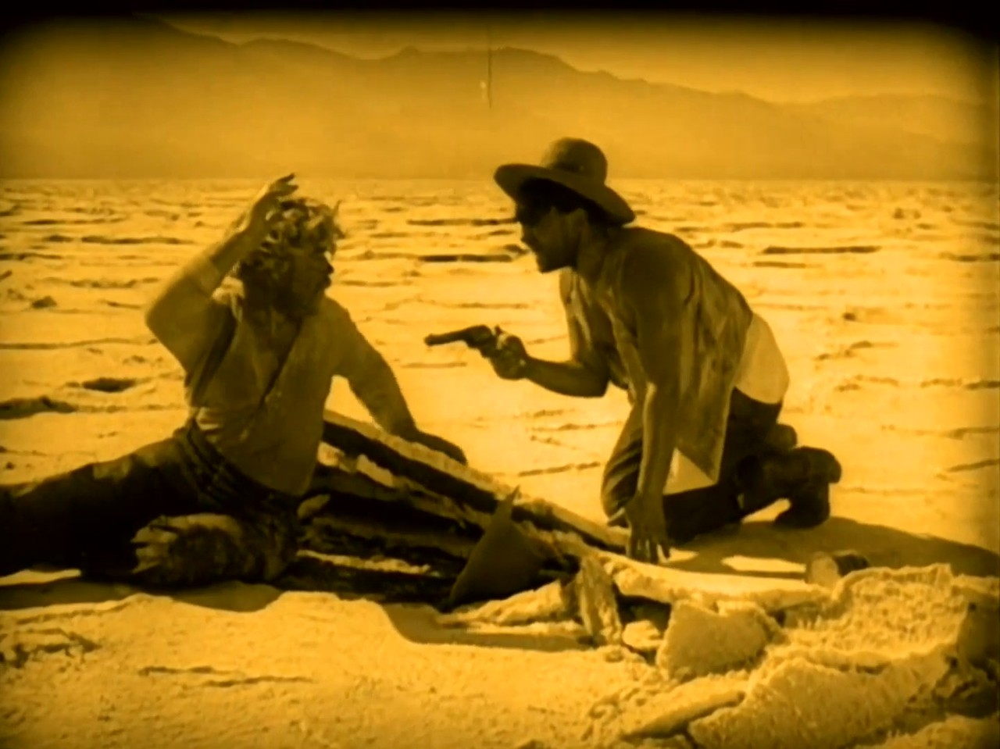

Greed, frame at 3:47:17
Erich von Stroheim · 1924 · Silent film, tinted in this copy (frame)
Free to use
Erich von Stroheim filmed for 198 days, from March to October 1923, and shot about 85 hours of footage. His cut ran over nine hours; after the company merged with Metro-Goldwyn-Mayer, the film was cut against his wishes to about two and a half hours. Only twelve people saw the full 42-reel version, which is now lost.